AcaciasAcianosAlhelísAmapolasAmarilisAzaleasAzucenasBegoniasBelladonasCameliasCampanillasClavelesClaveles chinosClematisCorazón de MaríaCrisantemosDaliasFlor de primaveraFlores para adelgazarFlores para cocinarFlores para enamorarFrancesillasFresiasGeraniosGirasolesGladiolosHortensiasIrisJacintosJazmínLaurelesLavandasLilasLiriosLisMadreselvasMagnoliasMargaritasMimosasNarcisosNenúfaresNomeolvidesOrquídeasPensamientosPeoníasPetuniasPrímulasRosasTulipanesVioletas
CactusCactus más rarosCómo usar
fertilizantesConvertirse en
floristaFlores amarillasFlores azulesFlores blancasFlores de bodaFlores
moradasFlores naranjasFlores para
perfumeríaFlores rojasFlores verdesFlores y
cosméticaFunerales y condolenciasHerramientas para
cuidarHuertos
verticalesPlantas de marihuanaPlantas
resistentes al solProductos cosméticosRemedios reafirmantes
Respiración y
fotosíntesisPlantas de salón
Fotos e imágenes
En Flores Pedia puedes encontrar 499 fotos, imágenes o dibujos.
En esta sección las listamos todas, distribuidas en distintas páginas. Ésta es la página 3. Puedes
ampliar la información de la foto y ver a qué artículo corresponde. Para ello, simplemente pincha
sobre ella.
Flores naranjas:
Castaños de Australia Flores naranjas:
Trompetas chinas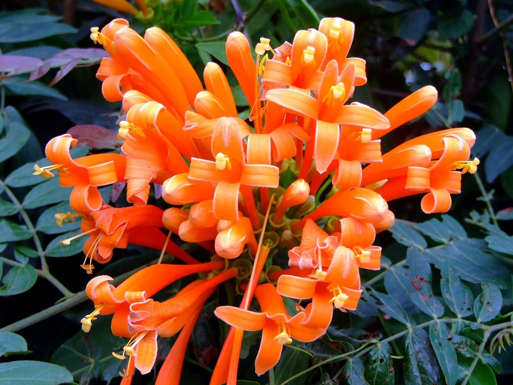Flores naranjas:
Calateas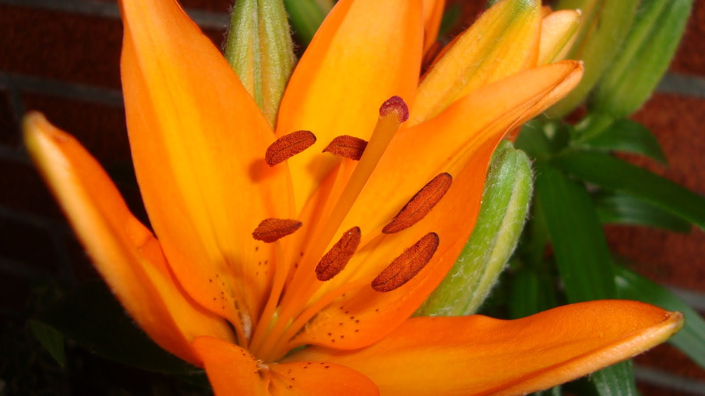Flores naranjas: CliviasFlores naranjas:
Platanillos
Flores naranjas:
Trompetas chinas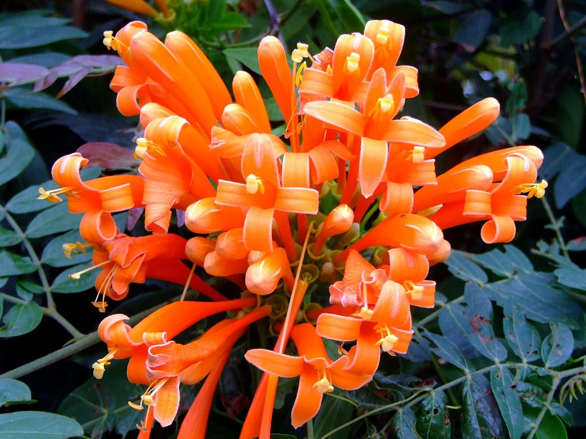Flores naranjas:
Calateas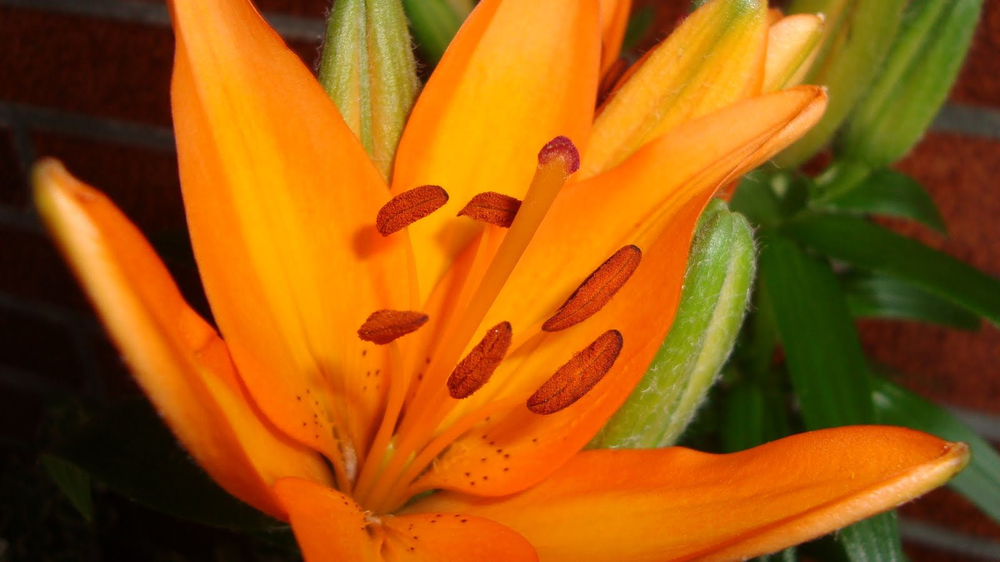Flores naranjas: CliviasFlores naranjas:
Platanillos Flores naranjas:
Farolitos japonesesFlores
naranjasFlores moradas:
Liatris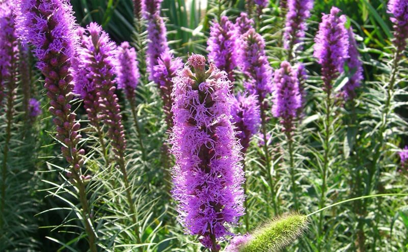Flores moradas: Iris
Flores naranjas:
Farolitos japonesesFlores
naranjasFlores moradas:
Liatris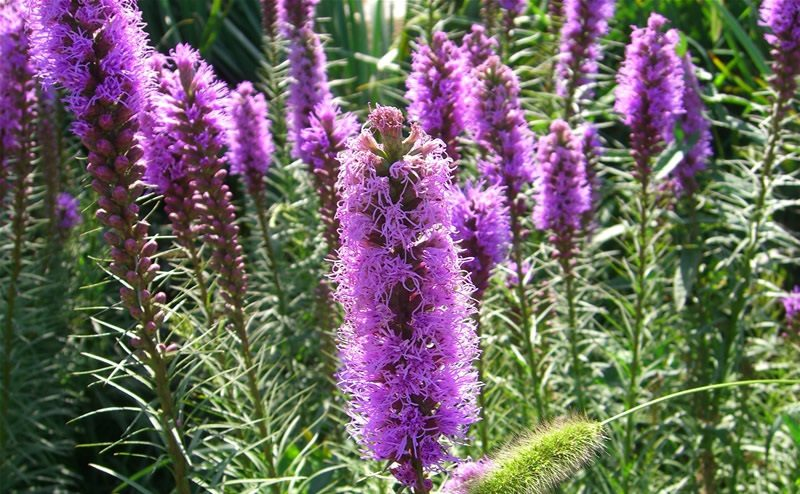Flores moradas: Iris Flores moradas:
Buganvillas
Flores moradas:
Buganvillas Flores moradas:
MatacabrasFlores moradas: PetuniasFlores moradas:
DedalerasFlores moradas:
AzafranesFlores
moradasFlores blancas:
Claveles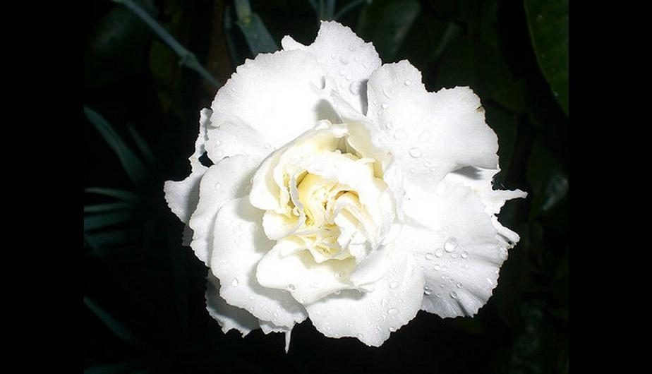Flores blancas:
Hortensias
Flores moradas:
MatacabrasFlores moradas: PetuniasFlores moradas:
DedalerasFlores moradas:
AzafranesFlores
moradasFlores blancas:
Claveles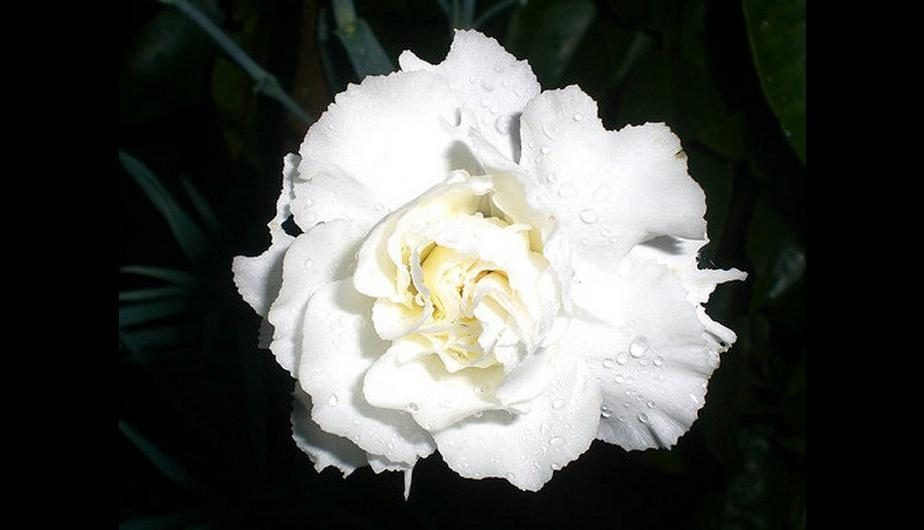Flores blancas:
Hortensias Flores blancas: Amarilis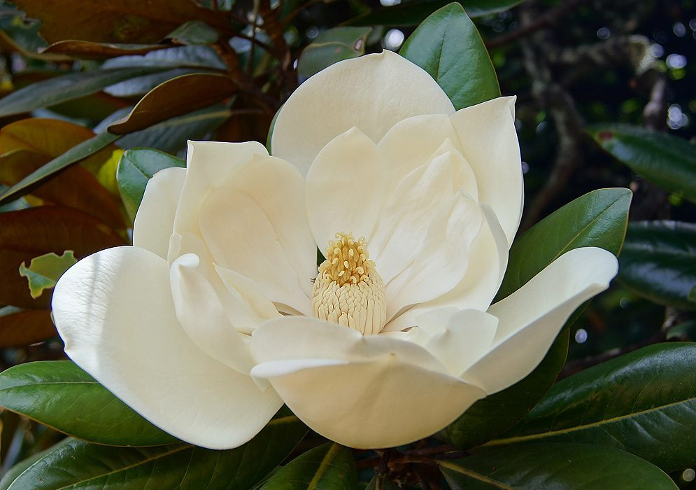Flores blancas:
CalasFlores blancas:
DaliasFlores blancas: Jaras
blancasFlores blancas:
CampanillasFlores blancas:
OrquídeasFlores
blancas
Flores blancas: Amarilis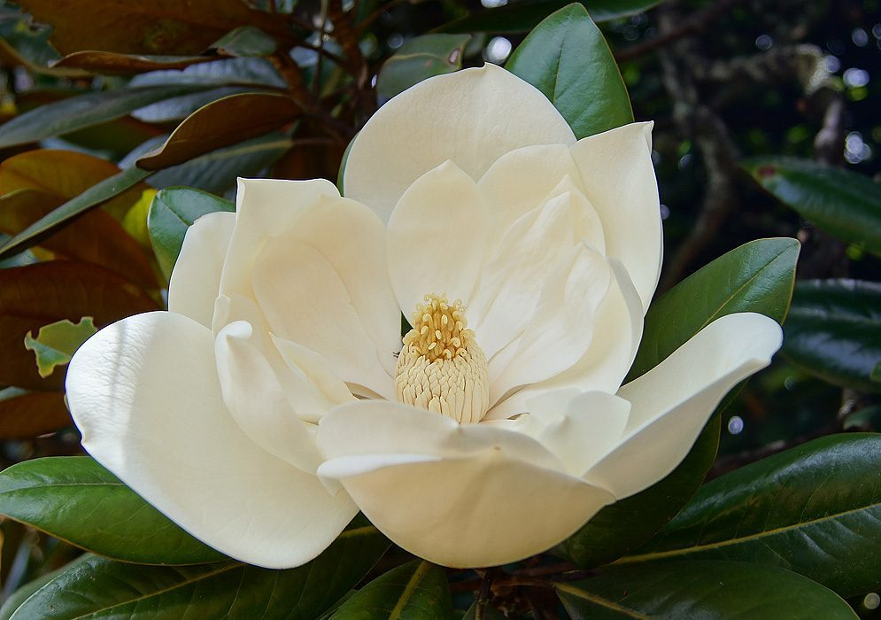Flores blancas:
CalasFlores blancas:
DaliasFlores blancas: Jaras
blancasFlores blancas:
CampanillasFlores blancas:
OrquídeasFlores
blancas
Flores naranjas:
Trompetas chinas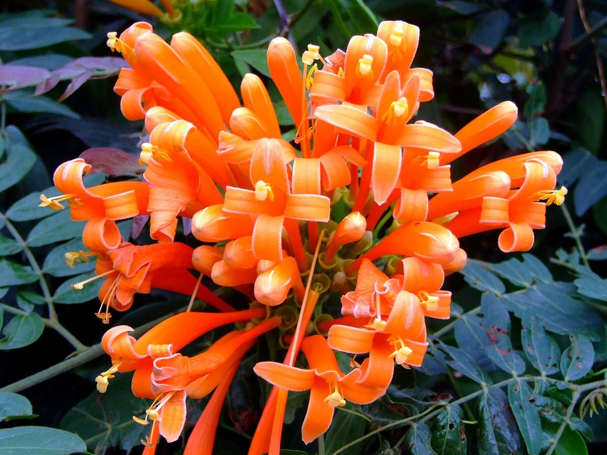Flores naranjas:
Calateas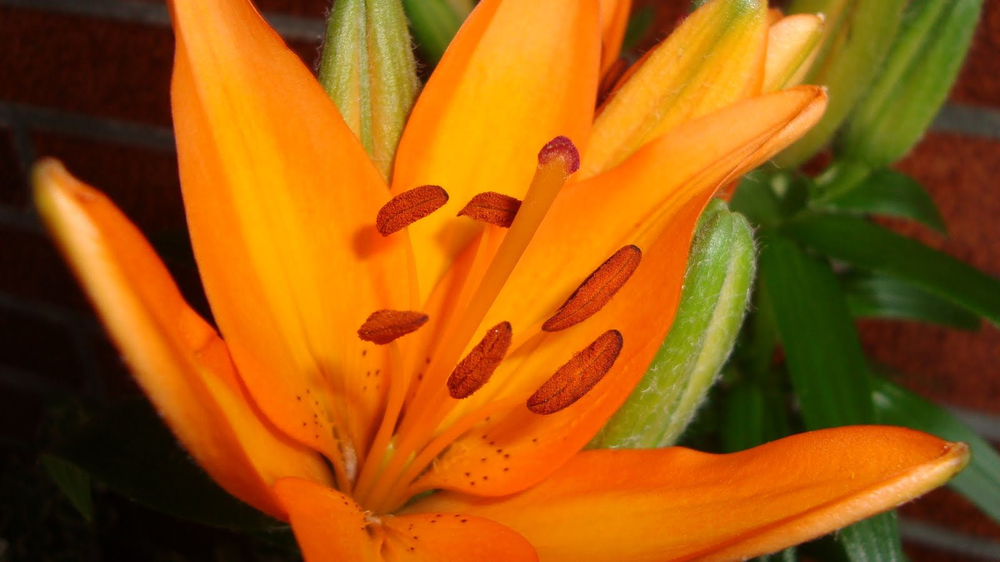Flores naranjas: CliviasFlores naranjas:
PlatanillosFlores naranjas:
Farolitos japonesesFlores
naranjasFlores moradas:
Liatris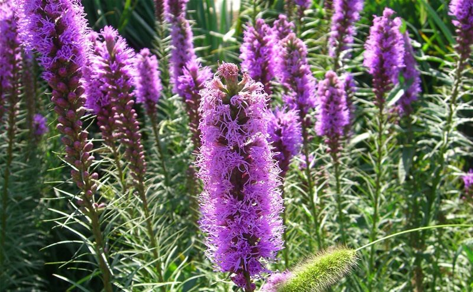Flores moradas: IrisFlores moradas:
BuganvillasFlores moradas:
MatacabrasFlores moradas: PetuniasFlores moradas:
DedalerasFlores moradas:
AzafranesFlores
moradasFlores blancas:
Claveles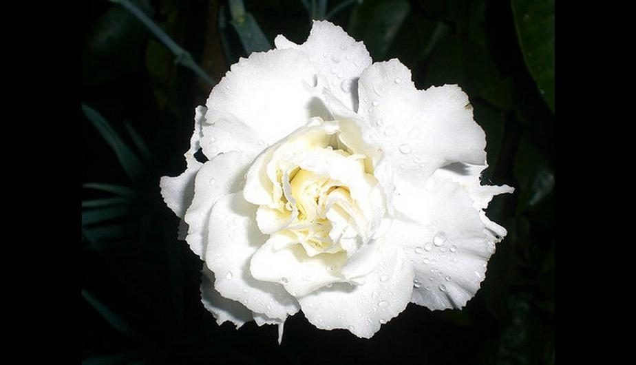Flores blancas:
HortensiasFlores blancas: Amarilis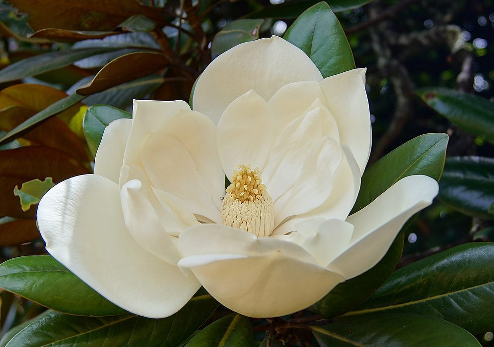Flores blancas:
CalasFlores blancas:
DaliasFlores blancas: Jaras
blancasFlores blancas:
CampanillasFlores blancas:
OrquídeasFlores
blancas
AcaciasAcianosAlhelísAmapolasAmarilisAzaleasAzucenasBegoniasBelladonasCameliasCampanillasClavelesClaveles chinosClematisCorazón de
MaríaCrisantemosDaliasFlor de
primaveraFlores para
adelgazarFlores para cocinarFlores para enamorarFrancesillasFresiasGeraniosGirasolesGladiolosHortensiasIrisJacintosJazmínLaurelesLavandasLilasLiriosLisMadreselvasMagnoliasMargaritasMimosasNarcisosNenúfaresNomeolvidesOrquídeasPensamientosPeoníasPetuniasPrímulasRosasTulipanesVioletas
CactusCactus más rarosCómo usar
fertilizantesConvertirse en
floristaFlores amarillasFlores azulesFlores blancasFlores de
bodaFlores moradasFlores naranjasFlores para
perfumeríaFlores rojasFlores verdesFlores y cosméticaFunerales y
condolenciasHerramientas para cuidarHuertos verticalesPlantas de marihuanaPlantas
resistentes al solProductos cosméticosRemedios
reafirmantes Respiración y fotosíntesisPlantas de salón